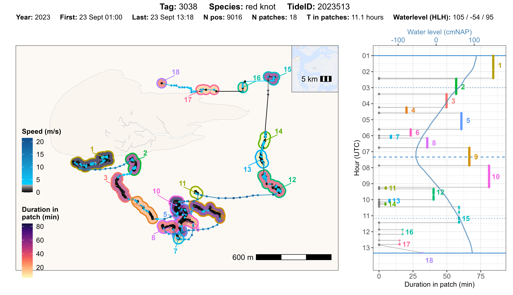
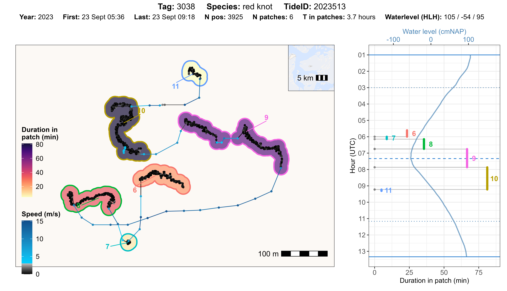
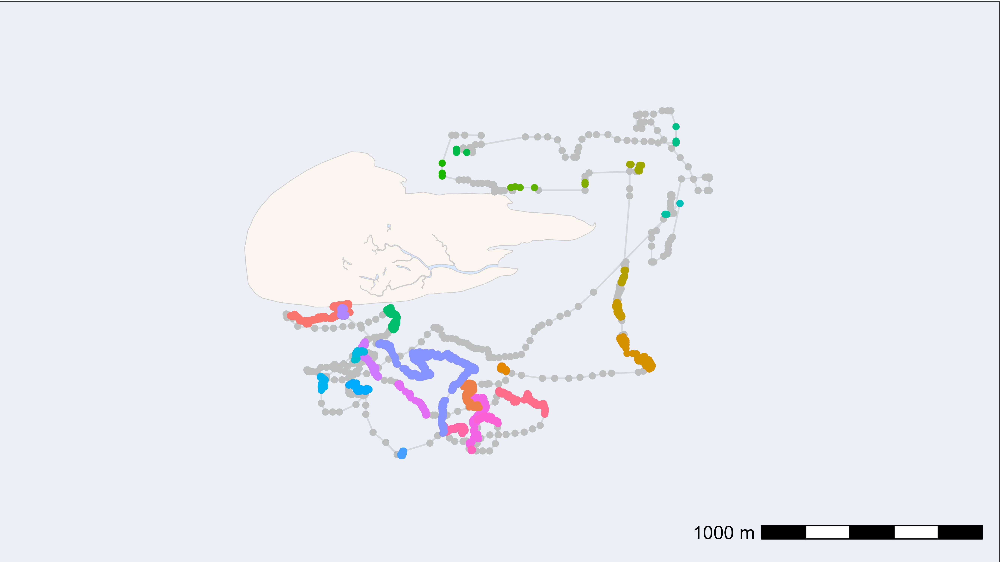
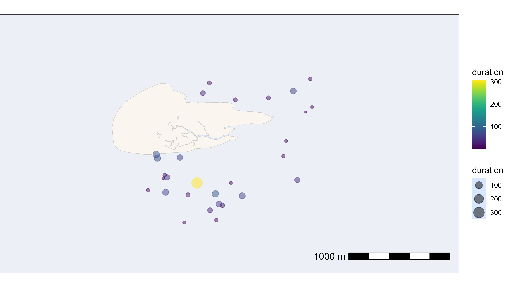
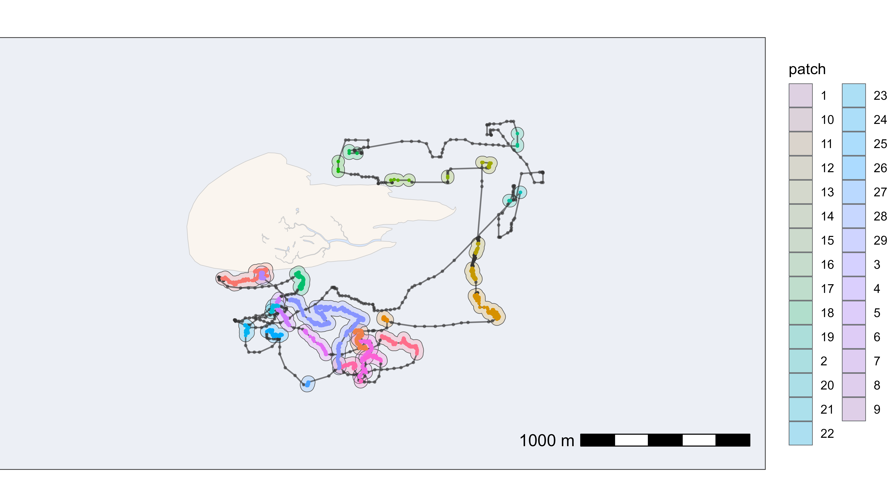
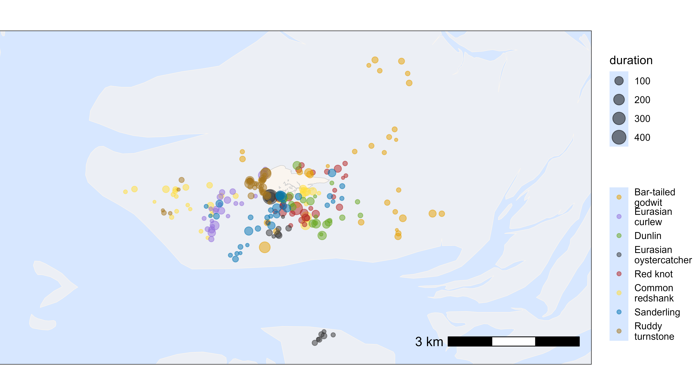
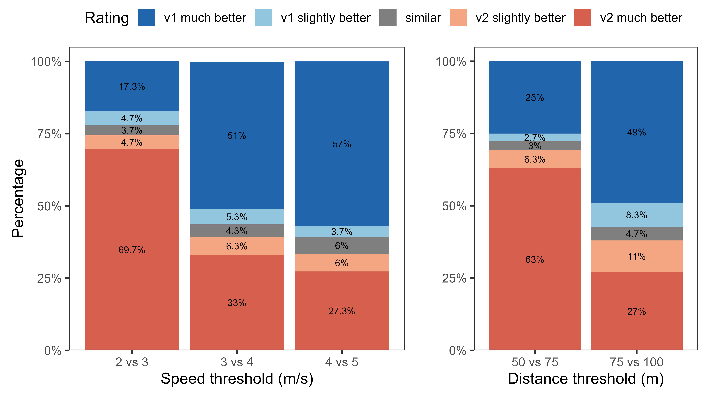
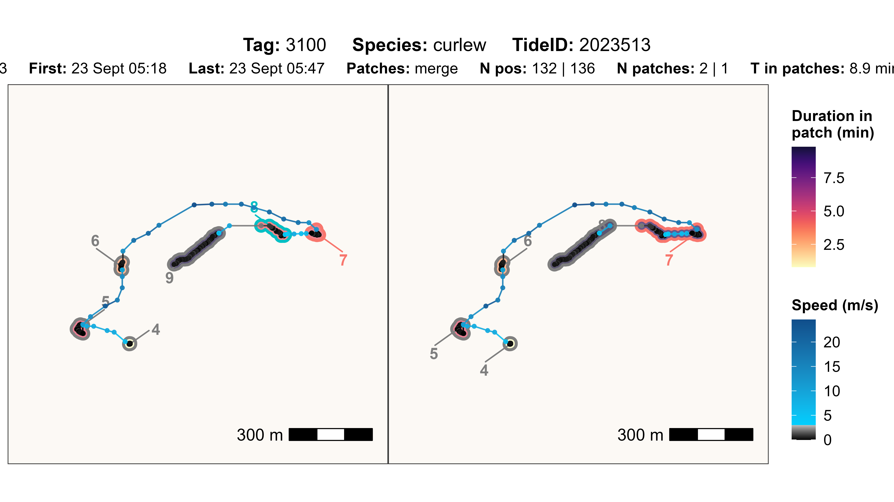

Add residence patches
Source:vignettes/extended_workflow/add_residence_patches.Rmd
add_residence_patches.RmdIn this vignette, we provide a general workflow to group WATLAS position data into so-called ‘residence patches’.
Background
The atl_res_patch() function is designed to segment and
aggregate WATLAS movement data into residence patches. The main
parameter is speed max_speed. With perfect data that would
be the only parameter necessary to adjust, because the speed flying,
walking or standing do not overlap. Because WATLAS data have
localization error (which is comparable to GPS, see Beardsworth
et al. 2022) and gaps when birds are not detected by receivers, we
need to have additional variables for classifying these data into robust
residence patches.
The logic of the function is to first identify proto-patches
(preliminary residence patches). Subsequent positions are assigned to
the same proto-patch when they have a speed smaller than
max_speed, a distance smaller than
lim_spat_indep and a time gap smaller than
lim_time_indep. Proto-patches with fewer than
min_fixes positions and shorter than
min_duration are filtered out.
For each proto-patch, the median position is calculated as well as
the time between subsequent proto-patches (i.e. the time between the
last position of a proto-patch and the first position of the next
proto-patch). If the distance between the median positions of two
subsequent proto-patches is smaller than lim_spat_indep and
the time between the proto-patch is less then
lim_time_indep, proto-patches are merged into residence
patches.
Lastly, a unique patch ID is assigned to each residence patch ordered by time from 1 to n.
Note that position error in combination with short intervals between
positions (e.g. 3 sec) can lead to speed outliers that affect the
creation of proto-patches. Therefore, it is recommended to first filter
(e.g. var_max < 5000) and smooth
(e.g. moving_window = 5) the data.
Parameter overview
Deciding on the optimal parameters for the residence patch classification is not a trivial task. The key is to find a good balance between true and false positives. See section below on how we decided on the standard parameter settings.
-
max_speed: A numeric value specifying the maximum speed (m/s) between two subsequent positions that would be considered non-transitory. 3 m/s seems to be the best compromise. Higher values often result in the merging of patches with clear flights in between and with lower values clear foraging behaviour is sometimes not picked up. -
lim_spat_indep: A numeric value specifying the maximum distance (m) between subsequent residence patches for them to be considered independent. In combination withlim_time_indep, this parameter avoids making a new proto-patch from gaps in the data when the bird was actually still at the same location. 75 m seems to be the best compromise. -
lim_time_indep: A numeric value specifying the time difference (min) between two subsequent residence patches for them to be considered independent. In combination withlim_spat_indep, this parameter can prevent the creation new proto-patches when there are large gaps in the data. For example, at the roost site a bird might not move for a long time at a location with poor coverage by receivers. If the bird then moves away and sends data from the same position, we can assume that all missed positions were also at this place. 180 min (3 hours) works fine for foraging, but it could be increased with position data that has large gaps. For example, when the analysis is focused on roosting behaviour, this could even be increased to e.g. 12 hours, to deal with large gaps in the data that can occur with roosting birds not moving and being at the same place with bad signal strength. -
min_fixes: The minimum number of positions for proto-patches. To make sure that residence patches have at least a few positions. 2 positions works best in picking up proto-patches. If the patch is belowmin_durationit will anyway be filtered out. -
min_duration: The minimum duration (s) for classifying residence patches. With a high-sampling interval (e.g. 3 s), short residence patches can be created, which are not biological relevant. A value of 60 sec (1 minute) helps to pick-up proto-patches. Biological relevance depends on the focus of the analysis and residence patches with a shorter duration can still be filtered out afterwards.
Example workflow
Load packages and required data
Note that access to the tidal data on WATLAS-Teams is required for running this code.
# packages
library(tools4watlas)
library(ggplot2)
library(viridis)
library(patchwork)
library(foreach)
library(doFuture)
# load example data
data <- data_example
# file path to WATLAS teams data folder
fp <- atl_file_path("watlas_teams")
# sub path to tide data
tidal_pattern_fp <- paste0(
fp, "waterdata/allYears-tidalPattern-west_terschelling-UTC.csv"
)
measured_water_height_fp <- paste0(
fp, "waterdata/allYears-gemeten_waterhoogte-west_terschelling-clean-UTC.csv"
)
# load tide data
tidal_pattern <- fread(tidal_pattern_fp)
measured_water_height <- fread(measured_water_height_fp)Calculate residence patches by tag
To reduce the memory size for parallel computing, we will first
subset the relevant columns from the data. This could be skipped for
small data tables. We will then run atl_res_patch() for
each tag ID in parallel. The column patch is added to the
data table, which provides the assigned patch ID’s for the
positions.
# subset relevant columns
data <- data[, .(species, posID, tag, time, datetime, x, y, tideID)]
# extract the unique tag IDs
id <- unique(data$tag)
# register cores and backend for parallel processing
registerDoFuture()
plan(multisession)
# loop through all tags to calculate residence patches
data <- foreach(i = id, .combine = "rbind") %dofuture% {
atl_res_patch(
data[tag == i],
max_speed = 3, lim_spat_indep = 75, lim_time_indep = 180,
min_fixes = 2, min_duration = 60
)
}
# close parallel processing
plan(sequential)
# show head of the summary table
head(data) |> knitr::kable(digits = 2)| species | posID | tag | time | datetime | x | y | tideID | patch |
|---|---|---|---|---|---|---|---|---|
| redshank | 2 | 3027 | 1695438805 | 2023-09-23 03:13:25 | 650705.6 | 5902556 | 2023513 | 1 |
| redshank | 3 | 3027 | 1695438808 | 2023-09-23 03:13:28 | 650705.6 | 5902556 | 2023513 | 1 |
| redshank | 4 | 3027 | 1695439189 | 2023-09-23 03:19:49 | 650721.0 | 5902559 | 2023513 | 1 |
| redshank | 5 | 3027 | 1695439192 | 2023-09-23 03:19:52 | 650721.1 | 5902559 | 2023513 | 1 |
| redshank | 6 | 3027 | 1695439195 | 2023-09-23 03:19:55 | 650723.1 | 5902564 | 2023513 | 1 |
| redshank | 7 | 3027 | 1695439198 | 2023-09-23 03:19:58 | 650723.1 | 5902564 | 2023513 | 1 |
Evaluate residence-patch assignment
The function atl_check_res_patch() can be used to
evaluate the residence patch assignment by tag and tide ID. The function
plots the track with residence patches on a map and shows the duration
(time in a patch in min) as coloured polygon on the map and against time
in a separate panel. Time starts on the top and goes from high tide to
the next high tide (solid blue lines), as well as indicating low tide
(dashed blue line). The title of the plot gives basic information about
the data and the water level for the corresponding tide.
Inspect one tag and tide
We can select one tag and tide to plot. Additionally, we need to
specify the offset for the tidal data we use (e.g. 30 min for
West-Terschelling) and a buffer (in m) around the residence patch data
to create the polygon (for visualisation purposes only). For data
inspection, it makes sense to set the buffer to half of
lim_spat_indep (maximum distance between subsequent
residence patches at which they will be considered independent),
ensuring that the polygons around residence patches correspond to the
spatial distance threshold used to merge residence patches.
atl_check_res_patch(
data[tag == "3038"],
tide_data = tidal_pattern, tide_data_highres = measured_water_height,
tide = "2023513", offset = 30,
buffer_res_patches = 75 / 2
)
It might also be convenient to zoom in on specifc range of residence patches, to inspect them in more detail.
# set parameters for subsetting data
tag_id <- "3038"
tide_id <- "2023513"
from_patch <- 6
to_patch <- 11
atl_check_res_patch(
data[
tag == tag_id &
datetime >= data[
tag == tag_id & tideID == tide_id & patch == from_patch, min(datetime)
] &
datetime <= data[
tag == tag_id & tideID == tide_id & patch == to_patch, max(datetime)
]
],
tide_data = tidal_pattern, tide_data_highres = measured_water_height,
tide = tide_id, offset = 30,
buffer_res_patches = 15,
buffer_bm = 50,
patch_label_padding = 2
)
Inspect many tags and tides
To get a general overview of the performance of residence patch
assignment, we can also loop through and plot all data by tag and tide,
or for example a random sample of 100 tags and tides. The plots can be
saved in any directory (e.g. ./outputs/res_patch_check/),
which has to be created before running the code.
# create table with data combinations to plot
idc <- unique(data[, c("species", "tag", "tideID")])
# sample 100 combinations to plot
set.seed(123)
idc <- idc[sample(.N, 100)]
# register cores and backend for parallel processing
registerDoFuture()
plan(multisession)
# loop to make plots for all
foreach(i = seq_len(nrow(idc))) %dofuture% {
# plot and save for each combination
atl_check_res_patch(
data[tag == idc$tag[i]],
tide_data = tidal_pattern,
tide_data_highres = measured_water_height,
tide = idc$tideID[i], offset = 30,
buffer_res_patches = 75 / 2,
filename = paste0(
"./outputs/res_patch_check/",
idc$species[i], "_tag_", idc$tag[i], "_tide_", idc$tideID[i]
)
)
}
# close parallel processing
plan(sequential)Based on these plots and perhaps additional checks, the parameters can be adjusted to improve the assignment of residence patches. See the section below on choosing the best parameter settings.
Summary of residence patch data
Once satisfied with the residence patch assignment, we can summarize the residence patches by tag and patch ID and merge the desired columns back to our full data table.
# summary of residence patches
data_summary <- atl_res_patch_summary(data)
# standardise duration to minutes
data_summary[, duration := duration / 60]
# merge desired summary columns with original data table
data[data_summary, on = c("tag", "patch"), `:=`(
duration = i.duration,
disp_in_patch = i.disp_in_patch
)]
# show head of the summary table
head(data_summary) |> knitr::kable(digits = 2)| species | tag | patch | nfixes | x_mean | x_median | x_start | x_end | y_mean | y_median | y_start | y_end | time_mean | time_median | time_start | time_end | dist_start_end | dist_in_patch | dist_bw_patch | time_bw_patch | disp_in_patch | duration |
|---|---|---|---|---|---|---|---|---|---|---|---|---|---|---|---|---|---|---|---|---|---|
| redshank | 3027 | 1 | 65 | 650705.6 | 650703.9 | 650705.6 | 650709.5 | 5902564 | 5902562 | 5902556 | 5902560 | 2023-09-23 03:40:31 | 2023-09-23 03:25:31 | 2023-09-23 03:13:25 | 2023-09-23 04:20:33 | 5.79 | 212.19 | NA | NA | 5.79 | 67.15 |
| redshank | 3027 | 2 | 60 | 650776.6 | 650776.6 | 650778.7 | 650771.9 | 5902216 | 5902217 | 5902216 | 5902206 | 2023-09-23 04:25:34 | 2023-09-23 04:25:32 | 2023-09-23 04:24:00 | 2023-09-23 04:27:09 | 12.29 | 51.41 | 351.03 | 206.99 | 12.29 | 3.15 |
| redshank | 3027 | 3 | 2456 | 650760.9 | 650762.0 | 650778.4 | 650699.8 | 5901722 | 5901737 | 5902014 | 5901490 | 2023-09-23 05:38:18 | 2023-09-23 05:35:44 | 2023-09-23 04:27:36 | 2023-09-23 06:51:24 | 530.22 | 1968.58 | 192.16 | 27.00 | 530.22 | 143.79 |
| redshank | 3027 | 4 | 25 | 648514.3 | 648514.8 | 648516.0 | 648514.2 | 5901441 | 5901440 | 5901453 | 5901441 | 2023-09-23 06:55:19 | 2023-09-23 06:55:21 | 2023-09-23 06:54:36 | 2023-09-23 06:55:57 | 11.98 | 37.77 | 2184.17 | 191.99 | 11.98 | 1.35 |
| redshank | 3027 | 5 | 64 | 648364.2 | 648362.5 | 648360.7 | 648365.8 | 5901596 | 5901590 | 5901578 | 5901620 | 2023-09-23 06:58:00 | 2023-09-23 06:58:01 | 2023-09-23 06:56:18 | 2023-09-23 06:59:42 | 42.01 | 79.03 | 206.04 | 21.00 | 42.01 | 3.40 |
| redshank | 3027 | 6 | 41 | 648059.6 | 648058.4 | 648059.7 | 648058.4 | 5902193 | 5902192 | 5902184 | 5902204 | 2023-09-23 07:01:48 | 2023-09-23 07:01:51 | 2023-09-23 07:00:39 | 2023-09-23 07:02:57 | 19.69 | 48.94 | 641.75 | 57.00 | 19.69 | 2.30 |
Here is description of the different columns in the output data table:
| Column | Description |
|---|---|
| tag | 4 digit tag ID (character), i.e. last 4 digits of the full tag number |
| patch | Patch ID |
| nfixes | Number of fixes in the patch |
| x_mean | Mean X-coordinate in meters (UTM 31 N) |
| x_median | Median X-coordinate in meters (UTM 31 N) |
| x_start | X-coordinate at the start of the residence patch (UTM 31 N) |
| x_end | X-coordinate at the end of the residence patch (UTM 31 N) |
| y_mean | Mean Y-coordinate in meters (UTM 31 N) |
| y_median | Median Y-coordinate in meters (UTM 31 N) |
| y_start | Y-coordinate at the start of the residence patch (UTM 31 N) |
| y_end | Y-coordinate at the end of the residence patch (UTM 31 N) |
| time_mean | Mean datetime of the positions in the residence patch |
| time_median | Median datetime of the positions in the residence patch |
| time_start | Start datetime of the patch |
| time_end | End datetime of the patch |
| dist_start_end | Distance (in meters) between first and last position |
| dist_in_patch | Distance (in meters) travelled within the patch (cumulative distance) |
| dist_bw_patch | Distance (in meters) between end of previous and start of current patch |
| time_bw_patch | Time (in seconds) between end of previous and start of current patch |
| disp_in_patch | Straight-line displacement (in meters) between start and end of the patch |
| duration | Time duration (in seconds) between first and last position in patch |
Plotting residence patches
Residence patches can be conveniently plotted using
ggplot2. Here, we will show plotting residence patchs by
individuals or species.
Plot by individual
Here, we will provide three examples of plotting residence patches for one red knot (tag 3038).
Plot track coloured by patch ID
In the first example, the residence patches are coloured by patch ID. To show the full track, the transient (unassigned) positions are plotted in grey.
# subset red knot
data_subset <- data[tag == 3038]
data_summary_subset <- data_summary[tag == 3038]
# create basemap
bm <- atl_create_bm(data_subset, buffer = 500)
# track with residence patches coloured
bm +
geom_path(data = data_subset, aes(x, y), alpha = 0.1) +
geom_point(
data = data_subset, aes(x, y), color = "grey",
show.legend = FALSE
) +
geom_point(
data = data_subset[!is.na(patch)], aes(x, y, color = as.character(patch)),
size = 1.5, show.legend = FALSE
)
Plot residence patches coloured by patch ID
In the second example, the residence patches are plotted at their median positions with the size and colour scaled to their duration (in minutes).
# plot residence patches itself by duration
bm +
geom_point(
data = data_summary_subset,
aes(x_median, y_median, color = duration, size = duration),
show.legend = TRUE, alpha = 0.5
) +
scale_color_viridis()
Plot track with residence patches as polygons
In the third example, we will calculate polygons around the residence patches and plot them
# make patch character for plotting
data_subset[, patch := as.character(patch)]
# create polygons around residence patches
d_sf <- atl_as_sf(
data_subset,
additional_cols = "patch",
option = "res_patches", buffer = 75 / 2
)
# geom_sf overwrites the coordinate system, so we need to set the limits again
bbox <- atl_bbox(data_subset, buffer = 500)
# plot polygons around residence patches
bm +
# add patch polygons
geom_sf(data = d_sf, aes(fill = patch), alpha = 0.2) +
# add track and points
geom_path(
data = data_subset, aes(x, y),
linewidth = 0.5, alpha = 0.5
) +
geom_point(
data = data_subset[is.na(patch)], aes(x, y),
size = 0.5, alpha = 0.5, color = "grey20",
show.legend = FALSE
) +
geom_point(
data = data_subset[!is.na(patch)], aes(x, y, color = patch),
size = 0.5, show.legend = FALSE
) +
# set extend again (overwritten by geom_sf)
coord_sf(
xlim = c(bbox["xmin"], bbox["xmax"]),
ylim = c(bbox["ymin"], bbox["ymax"]), expand = FALSE
)
Plot by species
Similarly, we can plot the residence patches by species. For this, we need to merge the species information back to the summary table for residence patches. The residence patches are coloured by species and scaled by duration (in minutes).
# create basemap
bm <- atl_create_bm(data, buffer = 500)
# add species
du <- unique(data, by = "tag")
data_summary <- data_summary[du, on = "tag", `:=`(species = i.species)]
# plot residence patches itself by duration and species
bm +
geom_point(
data = data_summary,
aes(x_median, y_median, color = species, size = duration),
show.legend = TRUE, alpha = 0.5
) +
scale_color_manual(
values = atl_spec_cols(),
labels = atl_spec_labs("multiline"),
name = ""
)
Choosing the best parameters
Selecting appropriate parameters for assigning residence patches was based on a combination of biological relevance, visual inspection, systematic testing, and expert judgement.
First, ‘min_duration’, ‘lim_time_indep’, and ‘min_fixes’ were set. To maintain biological relevance for the creation of proto-pacthes, a minimum duration of 60 s and temporal limit of 180 min were selected a-priori. Additionally, a minimum of 2 positions for a proto-patch was selected to avoid the creation of too many proto-patches with very short (biologically irrelevant) durations. These parameter settings were extensively evaluated using visual inspection.
Second, we systematically tested a range of values for two key
parameters: max_speed and lim_spat_indep .
Keeping all other parameters constant (see above), we varied
max_speed between 2, 3, 4, and 5 m/s, and
lim_spat_indep between 50, 75, and 100 m. For each
combination of parameter values and for eight shorebird species tracked
in the Wadden Sea in 2023, residence patches were computed for a subset
of 100 randomly selected tag–tide combinations per species (with the
condition that there are at least 500 positions per tag-tide
combination). We then did a pair-wise comparison of parameter settings
using atl_compare_res_patch_summary(), which highlighted
all new, lost, merged and split residence patches. From this summary, we
then selected a subset of 100 random changes that were plotted using
atl_compare_res_patch_plot(). The 100 resulting plots of
pair-wise comparisons were then scored by three expert observers. The
observers could choose “left much better”, “left slightly better”,
“similar”, “right slightly better”, or “right much better”.
Based on the systematic evaluation of parameter settings (see the
figure below), a max_speed of 3 m/s and a
lim_spat_indep of 75 m performed best.

Example workflow for choosing parameter values:
In this example, comparing 3 m/s and 4 m/s, the patches are wrongly merged when using 4 m/s, so the 3 m/s (left) was rated as “left much better”.
# load example data
data <- data_example
# run atl_res_patch with two different parameter sets
data_v1 <- atl_res_patch(
data[tag == "3100"],
max_speed = 3, lim_spat_indep = 75, lim_time_indep = 180,
min_fixes = 2, min_duration = 60
)
data_v2 <- atl_res_patch(
data[tag == "3100"],
max_speed = 4, lim_spat_indep = 75, lim_time_indep = 180,
min_fixes = 2, min_duration = 60
)
# change summary
change_summary <- atl_compare_res_patch_summary(data_v1, data_v2)## === Patch changes summary ===
## Lost (v1 patches gone in v2) : 0
## Gained (new patches in v2) : 0
##
## Splits (one v1 -> multiple v2): 0
## Merges (multiple v1 -> one v2): 1
# plot specific change
i <- 1
atl_compare_res_patch_plot(
data_v1 = data_v1,
data_v2 = data_v2,
tag = change_summary$tag[i],
change = change_summary$change[i],
patch_v1 = change_summary$patch_v1[i],
patch_v2 = change_summary$patch_v2[i]
)